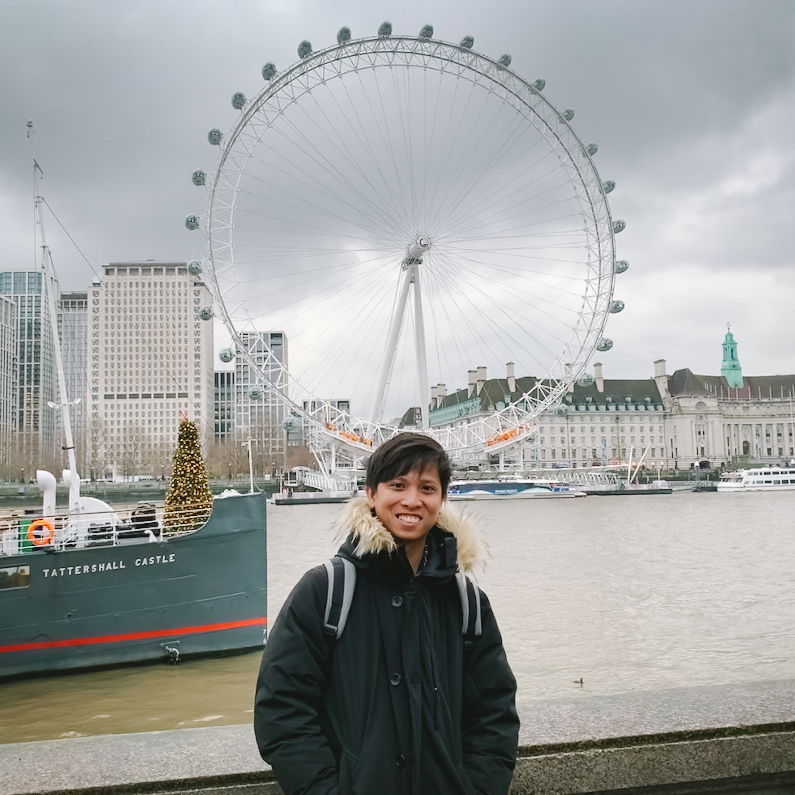
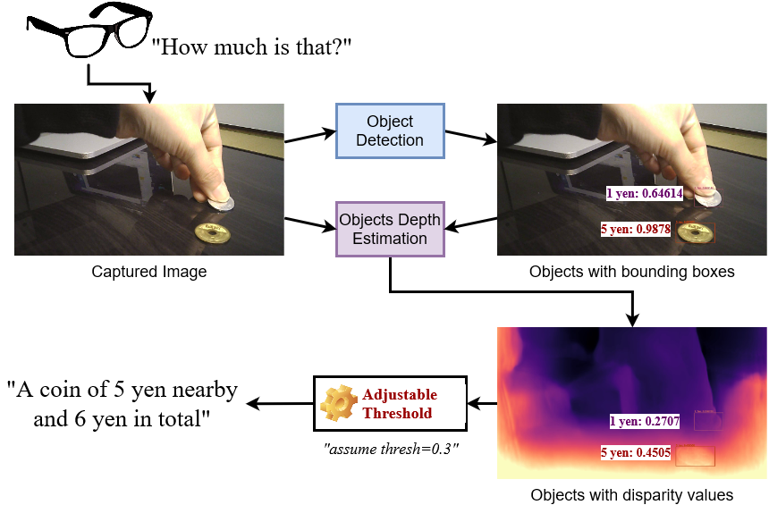
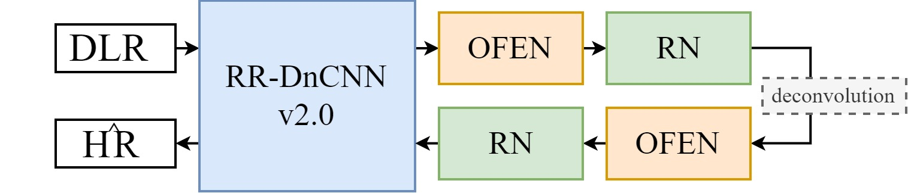
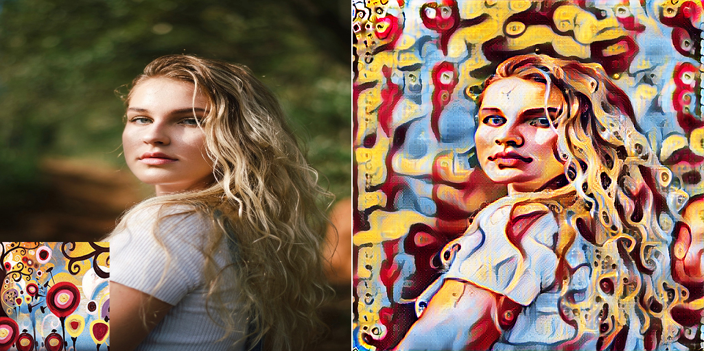

About Me
|  |
Man M. Ho Contact: manminhho.cs (at) gmail (dot) com Short Bio: My interests lie in Computer Vision, Deep Learning, and Photography. Besides, I love taking/editing/retouching photographs. |
Research Interests
- Photography.+ Image Style/Color Transfer.
+ Colorization.
+ Image Enhancement.
+ Smartphone Photo Scanning.
Publications
(I have published my works under the name "Minh-Man Ho" before 2020/1)

|
Semantic-driven Colorization Man M. Ho, Lu Zhang, Alexander Raake, Jinjia Zhou To appear in ACM SIGGRAPH European Conference on Visual Media Production (CVMP), 2021. |
|
Deep Photo Scan: Semi-supervised learning for dealing with the real-world degradation in smartphone photo scanning Man M. Ho, Jinjia Zhou In ArXiv, 2021. |
|

|
RR-DnCNN v2.0: Enhanced Restoration-Reconstruction Deep Neural Network for Down-Sampling Based Video Coding Man M. Ho, Jinjia Zhou, Gang He In IEEE Transactions on Image Processing (TIP), 2021. |

|
Deep Preset: Blending and Retouching Photos with Color Style Transfer Man M. Ho, Jinjia Zhou In Winter Conference on Applications of Computer Vision (WACV), 2021. |
|  |
Japanese Coins and Banknotes Recognition for Visually Impaired People Huyen T. T. Bui, Man M. Ho, Xiao Peng, Jinjia Zhou In VizWiz Workshop, 2020. |
|  |
SR-CL-DMC: P-frame coding with Super-Resolution, Color Learning, and Deep Motion Compensation (Top-5 performance among teams which have submitted a factsheet on P-frame Track, CLIC2020) Man M. Ho, Jinjia Zhou, Gang He, Muchen Li, Lei Li In IEEE Conference on Computer Vision and Pattern Recognition Workshops (CVPRW), 2020. |

|
Down-Sampling Based Video Coding with Degradation-Aware Restoration-Reconstruction Deep Neural Network (Oral - Best Paper Runner-up Award) Man M. Ho (Minh-Man Ho), Gang He, Zheng Wang, Jinjia Zhou In International Conference on Multimedia Modeling (MMM), 2020. |
|  |
Respecting Low-level Components of Content with Skip Connections and Semantic Information in Image Style Transfer (Oral) Man M. Ho (Minh-Man Ho), Jinjia Zhou, Yibo Fan In ACM SIGGRAPH European Conference on Visual Media Production (CVMP), 2019. |
Awards and Honors
2020/07, "Hosei University Science and Engineering Departments Education/Research Promotion Fund Academic Achievement Award 2020".2020/01, "Best Paper Runner-up Award" at MMM2020, Deajeon, Korea.
2018/08, "Key Contributor" by EyeQ Tech, Vietnam.
2018/08, "Squad of the month" by EyeQ Tech, Vietnam.
2016/12, “The Five-Virtue Student” by Vietnam National University, University of Information Technology.
Professional Experience
I have served as a reviewer for CVPRW 2020, BMVC 2020, WACV 2021, BMVC 2021, ICCV 2021 (assistant), and WACV 2022.Gallery
2019/12: My first conference trip to CVMP 2019, London, UK.